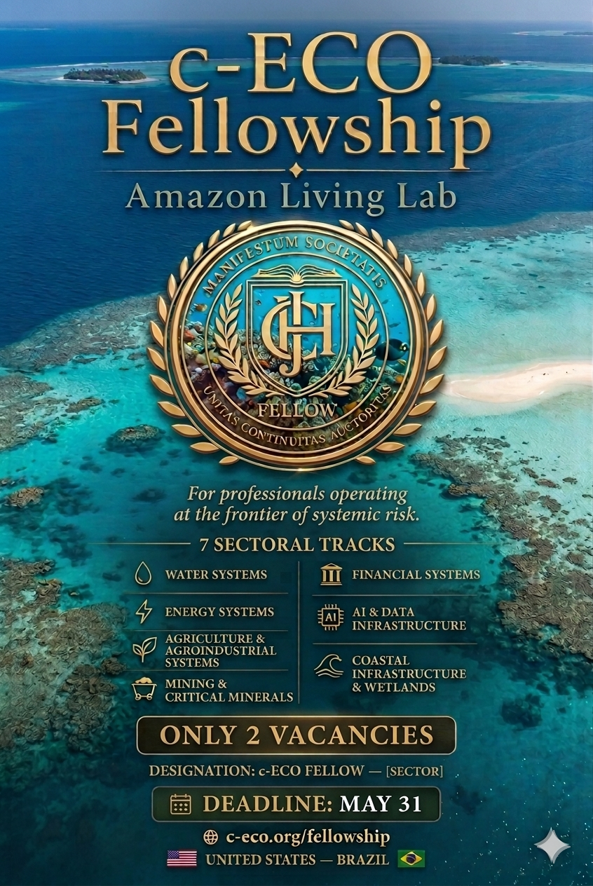
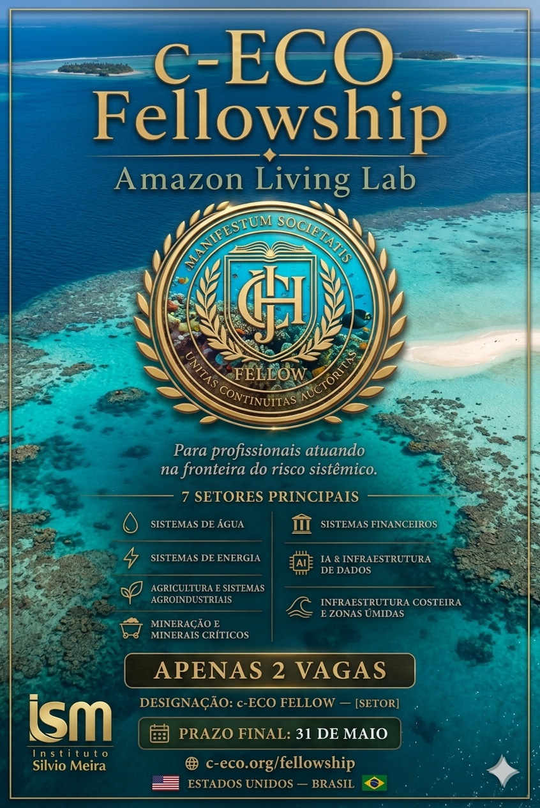

#mission
Mission
Institutional purpose oriented toward applied governance, systemic integrity, and operational continuity.
The Johann Christian Hasse Foundation exists to support institutional forms capable of responding to systemic risk before irreversible failure materializes.
Its mission is to sustain research, governance design, technical documentation, and applied programs that connect law, science, and decision structures under conditions of cumulative, non-linear, and potentially irreversible risk.
The Foundation prioritizes work that can be translated into durable institutional practice: governance frameworks, operational protocols, interdisciplinary programs, research coordination, and partnerships oriented toward real-world implementation.
Rather than acting as a purely abstract or philanthropic platform, the Foundation is structured to support continuity, legitimacy, and disciplined institutional execution across the c-ECO ecosystem.
#c-eco
Relationship to c-ECO
The Foundation is not separate from the system’s institutional life; it provides the structure through which continuity becomes possible.
The Johann Christian Hasse Foundation supports the institutional continuity, programmatic development, and applied deployment of the c-ECO governance architecture.
Within this structure, the c-ECO Statute establishes a transnational legal framework for predictive governance under conditions of systemic, cumulative, and potentially irreversible risk, conditioning the validity, enforceability, and continuity of legal and economic relations upon the material conditions that sustain life, economic activity, and the functional integrity of the Earth System. [oai_citation:3‡law.pdf](sediment://file_00000000730471fd86046534a17296ca)
The same framework expressly institutes a systemic juridical architecture in which legal and economic relations remain conditioned upon compatibility with biophysical stability and the preservation of reversibility. [oai_citation:4‡law.pdf](sediment://file_00000000730471fd86046534a17296ca)
The Operational Manual, in turn, functions as an integral component of this framework, translating the Statute and the Threshold Function Protocol into concrete, auditable, and operational procedures. It does not replace the Statute; it operationalizes it as technical-normative infrastructure capable of governing economic activity under conditions of systemic, non-linear, and potentially irreversible risk. [oai_citation:5‡c-ECO | TFP Manual.pdf](sediment://file_00000000301871fda5b1d32a04d92259) [oai_citation:6‡c-ECO | TFP Manual.pdf](sediment://file_00000000301871fda5b1d32a04d92259)
The Foundation’s role is therefore institutional rather than merely symbolic. It provides the continuity layer through which research, governance design, technical frameworks, partnerships, and applied programs can be coordinated with integrity and durability.
#governance
Governance
Governance presented in a due-diligence oriented format for funders, partners, and institutional reviewers.
Board Structure
The Foundation is governed by a Board responsible for fiduciary oversight, institutional integrity, document adoption, and compliance with non-profit obligations. Advisory collaboration may support scientific, legal, and technical calibration without displacing fiduciary responsibility.
Directors
Founder / Lead Institutional Steward
Additional directors may be added as formally confirmed.
Officers
President · Secretary · Treasurer
Officer structure to be aligned with bylaws and board resolutions.
Independent Oversight
Independent advisory or trustee-level support may be incorporated as governance matures.
Advisory Support
Scientific, legal, and technical collaboration may support programmatic integrity and institutional review.
Governance Principles
- Duty of care through informed and documented oversight.
- Conflict-of-interest discipline and disclosure integrity.
- Document adoption and retention as institutional infrastructure.
- Programmatic transparency proportionate to public and partner-facing obligations.
- Operational seriousness in the stewardship of frameworks linked to high-stakes governance.
#documents
Documents & Access
Governance materials are public-facing. Technical and operational materials are shared selectively upon institutional request.
Public Governance Documents
Technical & Operational Documentation
The Foundation maintains technical materials supporting the c-ECO governance architecture, including the Model Law and the Integrated Operational Manual.
These materials define structured methodologies, trigger logics, operational procedures, and implementation pathways, and are shared with institutional partners, qualified collaborators, and applied programs as appropriate.
The Foundation distinguishes between governance transparency and operational sensitivity. Public governance documents support accountability and institutional trust. Technical materials, by contrast, are shared in ways that preserve methodological integrity and qualified implementation.
This access structure reflects the nature of the c-ECO system itself: a governance architecture whose legal, technical, and operational elements are designed to function together rather than as isolated documents.
#programs
c-ECO Fellowship Program
The c-ECO Fellowship operates as an applied institutional layer of the wider c-ECO architecture, connecting governance, technical development, research, and real-world implementation across strategic sectors.


Program Function
The Fellowship is designed to identify and support highly qualified professionals operating at the frontier of systemic risk, governance architecture, and sectoral implementation.
As a programmatic instrument, it helps translate the Foundation’s institutional mission into applied capacity-building, sectoral coordination, and qualified participation within the c-ECO ecosystem.
#partners
Institutional Partnerships
Strategic institutional collaboration strengthens territorial reach, applied execution, and programmatic continuity.
Instituto Silvio Meira
The Foundation collaborates with the Instituto Silvio Meira as a strategic institutional partner for applied studies, program deployment, and regional coordination in Brazil.
This collaboration supports:
- Applied studies and institutional coordination
- Programmatic support for sectoral and territorial initiatives
- Research and implementation pathways connected to the Amazon context
- Operational support for Fellowship and future deployment structures